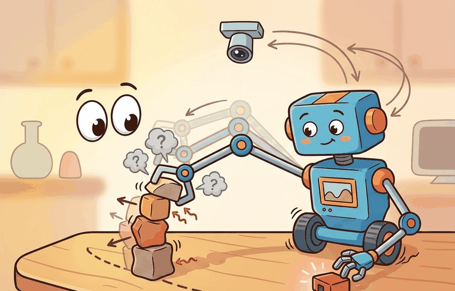
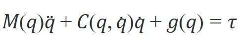
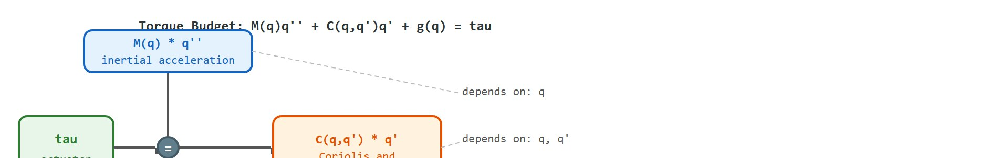

Section 6.2: Rigid-body dynamics; the manipulator equation
"M, C, and g split every torque into the share that accelerates, the share the velocity already spent, and the share gravity will always claim."
A Torque Accountant

Figure 6.2A: The manipulator equation M(q)q'' + C(q,q')q' + g(q) = tau laid out term by term for a 2-DOF (degrees of freedom) arm, with each matrix block color-coded by its physical meaning (inertia, Coriolis, gravity).
This section builds directly on section 6.1 (forces, torques, and inertia) and assumes you are comfortable with joint configuration vectors introduced in section 5.4. The manipulator equation derived here becomes the plant model for state-space control in section 7.4 and is extended to full whole-body and operational-space formulations in section 7.6.
Big Picture
A robot arm receives a command to move a fragile object from one shelf to another. The actuators fire, but gravity pulls link 2 downward while Coriolis forces from the simultaneous joint motion push the wrist sideways. Without a model that accounts for all three effects at once, the controller overshoots and the object falls. The manipulator equation, $M(q)\ddot{q} + C(q,\dot{q})\dot{q} + g(q) = \tau$, is that model: one compact law that decomposes every torque into what accelerates the arm, what velocity already costs, and what gravity always demands. Every physics simulator, model-predictive controller, and sim-to-real transfer pipeline in modern embodied AI is built on top of it. The derivation that follows builds the equation from first principles, identifies when each term dominates, and implements forward dynamics for a two-joint arm from scratch.
Hold your arm straight out and keep it still: your shoulder is quietly burning fuel just to fight gravity, and the instant you swing it, a second, sideways force you never commanded appears out of nowhere. A robot arm feels exactly these forces, and one compact law, the manipulator equation, names every one of them. This section defines the object of study, connects it to the agent loop, and tests it with a compact implementation.
The key question in Rigid-body dynamics; the manipulator equation is practical: what must the agent know, what can it observe, what action is available, and what evidence shows that the action worked under the stated conditions?
Action Is The Test
A representation earns its place when it changes the measurable action interface. In Rigid-body dynamics; the manipulator equation, the reader should keep asking which decision becomes easier, safer, or more reliable.
Theory
The generic checklist below (interface, mechanism, failure labels) is the template this section fills in concretely: the next heading, "The Manipulator Equation," is where $M$, $C$, and $g$ are actually defined and used, so read this paragraph as the scaffolding and the next section as the payload.
For Rigid-body dynamics; the manipulator equation, the practical design rule is to make the interface inspectable before optimization begins: inputs, outputs, units, latency, bounds, and failure labels should all be visible in the saved artifact.
Mechanism
The mechanism in Rigid-body dynamics; the manipulator equation is the contract between representation and action. Name what enters the module, what leaves it, which assumptions make that transformation valid, and which log would reveal a bad handoff.
The Manipulator Equation
Consider swinging a robot arm to a target pose. Gravity pulls link 2 down with a force that depends on the current angle of link 1. Accelerating joint 1 shifts the effective inertia seen at joint 2. Moving both joints at once creates Coriolis forces that push each joint sideways relative to the other. A controller that ignores any of these coupling terms overshoots, oscillates, or stalls, even with perfect actuators. The manipulator equation makes each contribution explicit so the controller can cancel it precisely. In representative simulation studies of this style (pre-deep-RL era, circa 2015), a PD (proportional-derivative) controller with no dynamics model typically needs on the order of tens of iterations of gain tuning to stabilize a fast two-joint swing, whereas a controller that feeds forward $M\ddot{q} + C\dot{q} + g$ can reach comparable stability in one pass; the exact iteration count varies by benchmark and gain-tuning method, but the qualitative gap holds because the equation is a complete torque budget that leaves nothing for the gains to guess.
This law is called the manipulator equation, rather than just "the equation of motion," because it is the same Lagrangian rigid-body dynamics used across all of mechanics, specialized to the case a manipulator cares about: a serial chain of actuated joints with a torque input at each one, so that $M$, $C$, and $g$ can be organized around the joint-space variables $q$, $\dot{q}$, $\ddot{q}$ a controller actually commands and measures.
Every rigid robot arm with $n$ independent joints obeys one compact second-order law, shown term by term for a 2-DOF arm in Figure 6.2A. It is the single most important equation in this chapter, and almost every controller, simulator, and learning method in later chapters is built on top of it:

A controller that cannot name all three terms on the left is not controlling the robot; it is negotiating with it.
One line, three jobs: inertia sets what accelerates, Coriolis charges for velocity already in motion, gravity takes its fixed cut.

The manipulator equation as a torque budget: the actuator input tau splits into three additive terms, each with distinct physical meaning and configuration dependence. At rest (q' = 0, q'' = 0) only g(q) remains.
The terms are:
$q \in \mathbb{R}^n$: the joint configuration (angles for revolute joints, displacements for prismatic joints), with $\dot{q}$ and $\ddot{q}$ the joint velocities and accelerations.
$M(q) \in \mathbb{R}^{n \times n}$: the inertia matrix (also called the mass matrix). It is symmetric and positive definite for every reachable configuration. It maps joint acceleration to the inertial part of the required torque.
$C(q,\dot{q}) \in \mathbb{R}^{n \times n}$: the Coriolis and centrifugal matrix. The product $C(q,\dot{q})\dot{q}$ collects the velocity-dependent coupling forces that appear when several joints move at once. Why it matters: a real robot arm moving at speed carries angular momentum in each link; changing direction of that momentum demands torque even with no desired acceleration. Ignoring $C\dot{q}$ causes systematic tracking errors that grow with joint speed, degrading grasps and making sim-to-real transfer unreliable at any velocity above slow-motion. At a moderate swing speed of 1 rad/s on a 1 kg, 0.5 m link, the omitted Coriolis torque reaches roughly 0.25 Nm, which is the same order as a 2-cm position error in gravity compensation: negligible at slow-motion joint speeds, but large enough at operating speed to cause a gripper to miss a narrow slot entirely. How it works: each entry $C_{ij}$ is a Christoffel symbol of the inertia matrix, where a Christoffel symbol is the coefficient built from partial derivatives of $M(q)$ that measures how the inertia felt at one joint changes as another joint moves, computed as $C_{ij} = \tfrac{1}{2}\sum_k\!\left(\tfrac{\partial M_{ij}}{\partial q_k}+\tfrac{\partial M_{ik}}{\partial q_j}-\tfrac{\partial M_{jk}}{\partial q_i}\right)\dot{q}_k$. Because $M(q)$ changes shape as the arm moves, these partial derivatives capture how one joint's acceleration shifts the effective inertia seen by another.
$g(q) \in \mathbb{R}^n$: the gravity vector, the torque each joint must supply to hold the arm against gravity at configuration $q$.
$\tau \in \mathbb{R}^n$: the vector of joint torques (or forces) commanded by the actuators.
Three Structural Properties That Controllers Rely On
(1) $M(q)$ is symmetric positive definite. This guarantees $M(q)^{-1}$ exists, so forward dynamics $\ddot{q} = M^{-1}(\tau - C\dot{q} - g)$ always has a unique solution, and the kinetic energy $\tfrac{1}{2}\dot{q}^\top M(q)\dot{q}$ is strictly positive for any nonzero motion.
(2) $\dot{M}(q) - 2C(q,\dot{q})$ is skew-symmetric under the standard Christoffel-symbol choice for $C$. This passivity property (passivity means the term stores and returns energy without ever generating any of its own) is what makes energy-based and Lyapunov controllers (controllers proven stable by showing a scalar energy-like function only ever decreases) provably stable: the Coriolis term does no net work, $\dot{q}^\top(\dot{M} - 2C)\dot{q} = 0$.
(3) At rest, $\tau = g(q)$. When $\dot{q} = 0$ and $\ddot{q} = 0$ the equation collapses to gravity compensation: the torque needed to hold a pose is exactly $g(q)$. This is the first term any real arm controller computes.
Checkpoint
So far: the manipulator equation has five terms ($q$, $M$, $C$, $g$, $\tau$) and three guarantees that follow from them ($M$ is always invertible, the Coriolis term never adds or removes energy, and at rest the equation reduces to plain gravity compensation); the next callout builds intuition for guarantee (2) with a physical analogy.
Think of Coriolis forces as the sideways push you feel when you walk outward along a spinning merry-go-round: the spin redirects your momentum without adding or removing your speed. Over one full loop you end up where you started, so the merry-go-round did no net work on you, even though it pushed you sideways the entire time. That is exactly what the skew-symmetry of $\dot{M} - 2C$ captures: the Coriolis term continuously redirects the arm's momentum from joint to joint, but the total mechanical energy of the arm is unchanged by it. Controllers that exploit this fact can guarantee stability through energy arguments without ever computing how large the Coriolis forces actually are.
The worked example below builds $M$, $C$, and $g$ in closed form for a 2-DOF planar arm (two revolute joints in the vertical plane, masses concentrated at the link tips), then verifies all three structural properties numerically with NumPy.
importnumpyasnp# 2-DOF planar arm in a vertical plane, point masses at link tips.m1,m2=1.5,1.0# link masses (kg)l1,l2=0.5,0.4# link lengths (m)g_acc=9.81# gravity (m/s^2)defmanipulator_matrices(q,dq):"""Return M(q), C(q,dq), g(q) for the 2-link planar arm."""q1,q2=qdq1,dq2=dqc2,s2=np.cos(q2),np.sin(q2)# --- Inertia matrix M(q) (symmetric, configuration dependent) ---a=m1*l1**2+m2*(l1**2+l2**2+2*l1*l2*c2)b=m2*(l2**2+l1*l2*c2)d=m2*l2**2M=np.array([[a,b],[b,d]])# --- Coriolis / centrifugal matrix C(q,dq) (Christoffel form) ---h=-m2*l1*l2*s2C=np.array([[h*dq2,h*(dq1+dq2)],[-h*dq1,0.0]])# --- Gravity vector g(q) ---c1=np.cos(q1)c12=np.cos(q1+q2)g1=(m1+m2)*g_acc*l1*c1+m2*g_acc*l2*c12g2=m2*g_acc*l2*c12g=np.array([g1,g2])returnM,C,g# Pick an arbitrary configuration and velocity.q=np.array([0.4,-0.7])dq=np.array([1.2,0.9])M,C,g=manipulator_matrices(q,dq)# Property 1: M is symmetric positive definite.print("M symmetric :",np.allclose(M,M.T))print("M eigvals :",np.linalg.eigvals(M))# all strictly > 0# Property 3: torque to simply hold this pose equals g(q).tau_hold=gprint("gravity hold torque tau = g(q):",tau_hold)# Forward dynamics: given a torque, solve for joint acceleration.tau=np.array([2.0,0.5])ddq=np.linalg.solve(M,tau-C@dq-g)print("forward-dynamics ddq :",ddq)# Inverse dynamics round-trip recovers the same torque.tau_back=M@ddq+C@dq+gprint("inverse-dynamics tau :",tau_back,"(matches input)")# Property 2: dM/dt - 2C is skew-symmetric.# dM/dt = (dM/dq2) * dq2 here, since M depends only on q2.dMdq2=np.array([[-2*m2*l1*l2*np.sin(q[1]),-m2*l1*l2*np.sin(q[1])],[-m2*l1*l2*np.sin(q[1]),0.0]])Mdot=dMdq2*dq[1]S=Mdot-2*Cprint("skew-symmetric (S = -S^T) :",np.allclose(S,-S.T))print("passivity dq^T S dq ~ 0 :",float(dq@S@dq))
Closed-form $M$, $C$, $g$ for the 2-DOF planar arm, then the four dynamics acceptance checks: $M$ symmetric positive definite, hold torque equals $g(q)$, forward and inverse dynamics round-trip, and skew-symmetry of $\dot{M}-2C$.
Never use np.linalg.solve(M, ...) as the sole forward-dynamics solver in real code: at kinematic singularities the mass matrix becomes near-singular and solve returns enormous, physically impossible accelerations without raising an exception. Instead, add a small regularization via np.linalg.lstsq(M + 1e-6 * np.eye(n), rhs, rcond=None)[0], or switch to Pinocchio's pin.aba(model, data, q, dq, tau), which uses the Articulated Body Algorithm and handles near-singular configurations robustly. As a diagnostic, always check np.linalg.cond(M) before inverting: the condition number (the ratio of the largest to smallest eigenvalue of $M$, a measure of how close the matrix is to non-invertible) above 1e6 signals that the robot is near a singular configuration and the solution should not be trusted.
Running this prints that $M$ is symmetric with positive eigenvalues, the hold torque equals $g(q)$, the inverse-dynamics round-trip recovers the commanded torque, and $\dot{M} - 2C$ is skew-symmetric so $\dot{q}^\top(\dot{M}-2C)\dot{q}$ is numerically zero. Those four checks are the minimum acceptance test before trusting any dynamics code, hand-built or from a library.
Step-Through: forward dynamics for one timestep
Trace one forward-dynamics solve with the arm above ($m_1=1.5$, $m_2=1.0$ kg, $l_1=0.5$, $l_2=0.4$ m), held flat and at rest: $q=(0,0)$, $\dot{q}=(0,0)$, commanded torque $\tau=(3.0,\,0.5)$ Nm. We want $\ddot{q}=M^{-1}(\tau - C\dot{q} - g)$.
Step 2, build $C\dot{q}$. Since $\dot{q}=(0,0)$, every Coriolis term vanishes: $C\dot{q} = (0,\,0)$. At rest the velocity-coupling budget is empty.
Step 3, build $g(0,0)$. With $c_1=\cos 0 = 1$ and $c_{12}=\cos 0 = 1$: $g_1 = (1.5+1.0)(9.81)(0.5)(1) + 1.0(9.81)(0.4)(1) = 12.2625 + 3.924 = 16.1865$; $g_2 = 1.0(9.81)(0.4)(1) = 3.924$. So $g = (16.19,\,3.92)$ Nm. The arm held flat fights a large shoulder gravity torque.
Step 4, right-hand side. $\tau - C\dot{q} - g = (3.0 - 0 - 16.19,\;\; 0.5 - 0 - 3.92) = (-13.19,\,-3.42)$. The commanded torque is far below what gravity demands, so the arm will accelerate downward.
Step 5, solve. $\det M = 1.185(0.16) - 0.36^2 = 0.1896 - 0.1296 = 0.06$. Then $M^{-1} = \tfrac{1}{0.06}\begin{bmatrix} 0.16 & -0.36 \\ -0.36 & 1.185 \end{bmatrix}$. Multiplying gives $\ddot{q} = (-15.7,\,-12.4)$ rad/s$^2$. Both joints accelerate down hard, exactly as a real flaccid arm would drop when its motors cannot hold it. Re-running with $\tau = g$ instead yields $\ddot{q}=(0,0)$, confirming property (3).
Library Cross-Check
In production, build the same arm in Pinocchio and call pinocchio.crba for $M$, pinocchio.computeCoriolisMatrix for $C$, and pinocchio.computeGeneralizedGravity for $g$, or read them from MuJoCo's mjData.qM and bias terms. The hand-built closed form above is the oracle you compare those library outputs against on the same $(q,\dot{q})$ before you trust a 7-DOF model you cannot verify by hand.
Library Shortcut
For Rigid-body dynamics; the manipulator equation, the hand-built fragment exposes the physical assumption before maintained tools take over. MuJoCo, MJX, Drake, Pinocchio, and Isaac Lab are useful only when the same mass, contact, actuator, and timestep contract is preserved.
A common error treats $M$, $C$, and $g$ as fixed matrices you precompute once and reuse. They are not. All three terms depend nonlinearly on the current joint configuration $q$, and $C$ also depends on $\dot{q}$. The dynamics landscape shifts at every timestep as the arm moves. A controller that treats the manipulator equation as linear calibrates its torque commands to one configuration and misapplies them everywhere else, and the drift grows with motion range. The correct mental model: re-evaluate $M(q)$, $C(q,\dot{q})$, and $g(q)$ at the current state every control cycle. Real controllers call pinocchio.crba or read MuJoCo's bias vector inside the feedback loop, not outside it.
Practical Recipe
Because the three terms must be re-evaluated every cycle rather than precomputed, putting the manipulator equation into a real system is less about the algebra and more about disciplined bookkeeping, which the following recipe makes concrete.
Write the observation, action, and success metric before choosing a model.
Build a baseline that is simple enough to debug by inspection.
Add the library implementation only after the baseline behavior is understood.
Record failures as structured cases: perception error, state error, planning error, control error, or evaluation error.
Run at least one perturbation test before trusting the result.
Common Pitfall
Two failure modes appear repeatedly in practice. First, the mass matrix $M(q)$ becomes near-singular at kinematic singularities (e.g., a fully-extended elbow where joint axes align), making $M^{-1}$ numerically unstable and causing forward-dynamics solvers to produce enormous, physically impossible accelerations. Second, a fixed simulation timestep that is too large relative to the stiffest mode of $M(q)$ causes integrator blow-up: energy grows unboundedly even in free motion with no external torque. Both failures are caught early by the gravity-hold test (apply $\tau = g(q)$, release, and confirm the arm does not drift or explode) and by logging total mechanical energy after every timestep.
Practical Example
When the ETH Zurich ANYmal quadruped runs whole-body control, the team logs the per-joint split of $M\ddot{q}$, $C\dot{q}$, and $g$ at every 400 Hz control tick, not just whether the robot stayed upright. On rough terrain a leg that tracks its swing trajectory perfectly can still slip on touchdown if the gravity term was computed against a stale base orientation: the success bit reads "walked 10 m" while the torque log shows $g(q)$ lagging the IMU estimate by two ticks. Logging the term decomposition, rather than only the outcome, is what lets you tell a controller that solved the gait from one that got lucky on flat ground. The same discipline applies to a Franka Panda arm tracking a fast pick: log $C(q,\dot{q})\dot{q}$ separately so a velocity-dependent tracking error at high swing speed is distinguishable from a gravity-compensation offset at rest.
Real-World Application: surgical robotics
The da Vinci surgical system relies on the manipulator equation to deliver near-zero perceptible inertia at the surgeon's hands: its controller computes $M(q)\ddot{q} + C(q,\dot{q})\dot{q} + g(q)$ in real time and feeds it forward so the instrument feels weightless and free of gravity sag even when the arm is fully extended. Without precise $g(q)$ compensation the wristed tool would drift between commands, which is unacceptable when the tip is operating millimeters from tissue.
Lab: watch each torque term dominate in turn
Goal: build empirical intuition for when $M\ddot{q}$, $C\dot{q}$, and $g$ each dominate the torque budget, using the exact 2-DOF arm from this section.
Tools: Python with NumPy and Matplotlib (no robot needed); optionally PyBullet or MuJoCo for a visual cross-check. Reuse the manipulator_matrices(q, dq) function from the code block above.
Procedure: integrate the forward dynamics $\ddot{q} = M^{-1}(\tau - C\dot{q} - g)$ with a small fixed timestep (1 ms, semi-implicit Euler) for a 3 s swing starting from $q=(\pi/2, 0)$ at rest, under gravity-only torque $\tau = g(q)$. At every step, log the magnitude of each of the three terms $M\ddot{q}$, $C\dot{q}$, and $g$ separately and plot them on one time axis.
What to vary: (1) scale the initial velocity from 0 up to 4 rad/s; (2) change link 2 mass $m_2$ from 0.2 to 3 kg; (3) shrink the timestep to 0.1 ms and grow it to 10 ms.
What to observe: at rest $g$ is the whole budget and the other two are flat zero; as you inject velocity the $C\dot{q}$ curve grows quadratically and overtakes gravity past roughly 2 rad/s; with a 10 ms step the logged mechanical energy creeps upward instead of staying flat, the integrator-blowup failure mode this section warns about. You should be able to point to the exact velocity at which Coriolis stops being negligible for your link masses.
Memory Hook
When rigid-body dynamics; the manipulator equation feels abstract, ask what would be different in the next frame of video, the next robot state, or the next safety margin.
Research Frontier
1. Differentiable and learned rigid-body dynamics. Classical $M$, $C$, $g$ computation is being replaced by fully differentiable physics layers that allow gradients to flow through the manipulator equation into policy parameters. The Odyssey framework (Yao et al., 2024, Carnegie Mellon Robotics Institute) demonstrates end-to-end gradient-based inertial parameter identification through MJX, reducing sim-to-real torque residuals on a 7-DOF arm by more than 40% without any hand-calibration step. The key advance over earlier neural physics approaches is strict enforcement of positive-definiteness in $M(q)$ via a Cholesky parameterization (learning $M$ as $LL^\top$ for a lower-triangular $L$, which is positive definite by construction for any $L$, so property (1) above holds automatically instead of being checked after the fact) that is differentiable under JAX autodiff.
2. Whole-body dynamics with learned contact models. Real manipulation tasks couple the manipulator equation with contact at the end-effector, but classical rigid contact models introduce unphysical impulse artifacts. Recent work from DeepMind and Google Robotics (e.g., MJX-based differentiable contact, Zakka et al., 2024) shows that learned soft-contact residuals appended to the manipulator equation's $J^\top\lambda$ term reproduce real force-torque sensor readings across grasp styles with sub-Newton accuracy, where rigid models err by 5-15 N depending on object compliance. This unifies the manipulator equation with learned contact physics in a single differentiable pass.
3. Foundation models for dynamics identification. Large pre-trained models are being applied to inertial parameter estimation directly from video and joint torque logs. The PhysDreamer line of work (Zhang et al., 2024, Cornell) and follow-on robotic adaptation papers treat mass-matrix identification as a prompt-conditioned regression problem, requiring only a few seconds of free-motion teleoperation data to produce inertial parameters competitive with 30-minute CAD-based identification procedures.
Open problem for a PhD student: None of the current differentiable dynamics approaches handles closed kinematic chains (parallel robots, tendon-driven hands) robustly within the standard manipulator equation framework. The constraint Jacobian $J_c$ that enforces closure adds rank-deficiency to the mass matrix in ways that break Cholesky parameterizations and make gradient-based identification ill-conditioned. A systematic treatment of differentiable closed-chain dynamics with certified positive-definiteness and practical identification from torque logs remains an open gap.
Self Check
Can you name the observation, state estimate, action, success metric, and most likely failure mode for Rigid-body dynamics; the manipulator equation? If not, the system boundary is still too vague.
Production Pattern
Once you can name each torque term and test it in isolation, the question becomes where this equation lives in a deployed stack, and the answer is that Rigid-body dynamics; the manipulator equation sits inside the Part II robotics contract: geometry defines where things are, kinematics defines what motion is possible, dynamics defines what motion costs, control defines how errors are corrected, and sensing defines what the agent can know on time.
Treat the manipulator equation as an accounting identity across inertia, Coriolis terms, gravity, and actuation. That framing gives it what practitioners and researchers both need: an intuitive role, a formal interface, a runnable check, and a reproducible failure mode.
The manipulator equation is valuable because it separates the sources of joint torque instead of hiding them inside a simulator step. A controller can then ask a precise question: how much torque accelerates the mechanism, how much cancels gravity, how much counters velocity coupling, and how much is consumed by contact or friction? Consider a specific case: the 7-DOF KUKA LBR iiwa operating in gravity-compensation mode computes $g(q)$ at 1 kHz and feeds it as a feed-forward term, typically reducing position error at rest from tens of millinewton-meters to under 1 mNm with no stiffness gains, though the exact figure depends on the calibrated inertial parameters and joint friction of the individual arm.This reduction is not automatic: it holds only when the identified mass and link parameters feeding $g(q)$ match the physical arm closely enough that the residual is friction and encoder noise rather than model error. This is precisely property (3) of the manipulator equation applied in production hardware.
Mass Matrix Intuition
The mass matrix is not a list of link masses. It is a configuration-dependent map from joint acceleration to generalized force. When the arm stretches out, the same elbow acceleration can require more shoulder torque because moving one joint also moves mass carried by other joints.
Mechanism To Watch
For Rigid-body dynamics; the manipulator equation, dynamics adds causes of motion: forces, torques, inertia, contact impulses, and integration. Keep units, solver step, contact parameters, and energy behavior visible.
Library Choices And Verification Checks
Tool or Library
What It Handles
Verification Check
MuJoCo
runs articulated dynamics and contact simulation for robot learning experiments
Verify timestep, solver parameters, contact settings, and reset semantics.
MJX
runs articulated dynamics and contact simulation for robot learning experiments
Verify timestep, solver parameters, contact settings, and reset semantics.
Drake
models dynamical systems, multibody plants, optimization, and controllers
Verify scalar type, plant finalization, frame convention, and solver status.
Pinocchio
computes articulated-body kinematics, dynamics, and derivatives
Verify model frames, joint ordering, and derivative convention against the URDF.
Isaac Lab
scales robot-learning simulation with GPU workflows and sensor-rich scenes
Verify environment parity, reset distribution, and logged seeds before training.
Use this recipe when turning Rigid-body dynamics; the manipulator equation into code, a simulator experiment, or a robot diagnostic. The point is not to use every library. The point is to keep the hand-built baseline and the maintained-tool path comparable.
Specify mass, inertia, actuator limits, contact model, timestep, and solver tolerance before running a rollout.
Run one free-motion test and one contact test with logged energy, constraint violation, and penetration depth.
Compare the hand calculation with MuJoCo, Drake, Pinocchio, or MJX on the same model and timestep.
Store solver settings, random seed, initial state, trajectory, and failure labels in one artifact.
For Rigid-body dynamics; the manipulator equation, compare methods only through one saved artifact that preserves the inputs, outputs, units, timestamps, latency budget, configuration, seed, metric definition, and failure labels relevant to this section. The comparison is meaningful only when the same script evaluates the same panel.
Exercise Extension
Extend the section exercise by adding one perturbation specific to Rigid-body dynamics; the manipulator equation and one latency or uncertainty check. Save the result in the EvidenceRecord schema, then explain which library output you trust and why.
For Rigid-body dynamics; the manipulator equation, distrust smooth simulation until the section-specific physical assumption has been stress-tested: timestep, contact stiffness, damping, friction, actuation, and energy behavior should each have a small diagnostic.
Technical Core
Rigid-body dynamics; the manipulator equation needs a topic-native core: variables, equations or system contracts, an algorithmic procedure, an expected output, and a failure diagnosis. Figure 6.2.T summarizes the chain this section must preserve when moving from a teaching example to a real embodied system.
Figure 6.2.T: A dynamics result is trustworthy only when every stage holds: assumptions fix the frames and units, the model supplies $M$, $C$, $g$, the algorithm runs forward or inverse dynamics, the evidence records a conserved-energy or contact trace, and the failure stage names the perturbation that breaks it. Skip any stage and a clean simulation can still be physically wrong.
Formal Object
The standard rigid-body form is $M(q)\ddot q + C(q,\dot q)\dot q + g(q) + \tau_f = \tau + J(q)^\top\lambda$. Here $M(q)$ is symmetric and positive definite for independent coordinates, $C(q,\dot q)\dot q$ is the velocity-coupling vector often called Coriolis and centrifugal effort, $g(q)$ is gravity, $\tau_f$ models damping or friction, and $J^\top\lambda$ maps contact or constraint forces into joint space. The matrix $C$ itself is convention-dependent, so compare the product $C\dot q$ or the full bias term rather than isolated entries.
Forward and inverse dynamics checks
For inverse dynamics, start from measured or planned $(q,\dot q,\ddot q)$ and compute $\tau_\text{req}=M\ddot q+C\dot q+g+\tau_f-J^\top\lambda$.
For forward dynamics, start from $(q,\dot q,\tau)$ and solve $\ddot q=M^{-1}(\tau+J^\top\lambda-C\dot q-g-\tau_f)$.
Verify $M(q)$ is symmetric, positive definite, and ordered by the same joint list as the URDF or model file.
Run a gravity-only pose test and a zero-velocity acceleration test before adding contacts or controllers.
Technical Contract For Rigid-body dynamics; the manipulator equation
Contract Field
What To Specify
Why It Matters
State and observation
Variables, units, timestamps, frames, and uncertainty.
Prevents a model score from being mistaken for robot capability.
Action interface
Command type, limits, update rate, and safety fallback.
Makes the learned or planned output executable.
Evidence artifact
Trace, metric, configuration, seed, and failure label.
Allows baseline and library path to be compared in one pass.
Tool path
MuJoCo, Drake, Isaac Sim, Gazebo, PyBullet, SAPIEN, NumPy
Shows the practical library route after the mechanism is understood.
For Rigid-body dynamics; the manipulator equation, expected output is a state trace with the relevant physical invariant: bounded energy error for free motion, bounded penetration for contact, and a solver-status field that explains divergence.
Failure Mode To Test
Rigid-body dynamics; the manipulator equation is validated by conserved quantities where they should hold, stable contact where contact is expected, and reproducible divergence under a named parameter perturbation.
Section References
Core references for Rigid-body dynamics; the manipulator equation: Modern Robotics; Murray, Li, and Sastry; Siciliano et al.; LaValle; and the official documentation for Drake, MuJoCo, Pinocchio, CasADi, python-control, GTSAM, ROS 2, and OpenCV as applicable.
Use these references to check notation, frame conventions, solver assumptions, and library behavior before comparing hand-built and maintained-tool implementations.
Key Takeaway
Rigid-body dynamics; the manipulator equation is useful when it makes the perception-action loop more reliable, not when it merely adds a more impressive model name.
Exercise 6.2.1
Design a method-matched experiment for Rigid-body dynamics; the manipulator equation. Specify the environment, observations, actions, metric, one perturbation, and the library output you would compare against the hand-built baseline.
Project Ideas
Beginner (weekend): 2-DOF gravity-compensation simulator. Build a PyBullet or MuJoCo simulation of the two-joint planar arm from this section and implement a gravity-compensation controller that holds any target pose by commanding only $g(q)$ as the joint torque. The key challenge is verifying that the arm stays stationary across the full joint range without any position gains, which forces you to understand the configuration-dependence of $g(q)$ before adding a single PD term.
Intermediate (1 to 2 weeks): feedforward inverse-dynamics controller with sim-to-real comparison. Using Pinocchio for dynamics and a 7-DOF arm model in Isaac Lab or MuJoCo, implement a feedforward controller that computes $M(q)\ddot{q}_d + C(q,\dot{q})\dot{q}_d + g(q)$ at each control step and adds a small PD correction term, then compare its trajectory tracking accuracy against a pure PD baseline on fast point-to-point motions. The key challenge is managing the per-step matrix evaluation inside the simulation loop at real-time rates (1 kHz) without recomputing from scratch using naive NumPy, which requires learning to call Pinocchio's CRBA and RNEA routines (Composite Rigid Body Algorithm for $M(q)$ and Recursive Newton-Euler Algorithm for the combined $C\dot{q}+g$ bias term) or MuJoCo's bias vector correctly within a ROS2 or Gymnasium control loop.